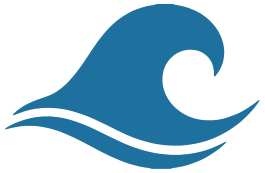
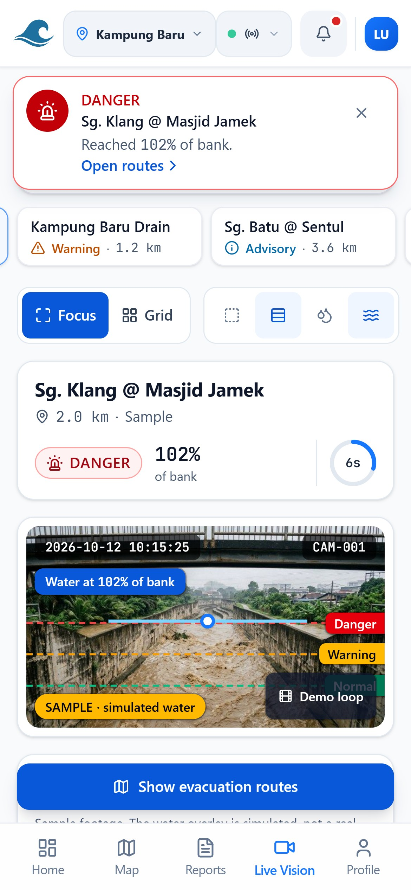

FloodWay
Before the road disappears.
AI flash-flood early warning and safe evacuation for Kuala Lumpur. Cameras the city already has become water-level sensors, and the map routes you around the flood.
Muhammad Luqman Nurhakim Rosli · Nadyie Azil Nazeri · Batrisyia Afrina Risamuddin
Instructor: Dr. Azliza Mohd Ali
Floods move in minutes. Warnings move in hours.
Rapid onset. Paved ground leaves rain nowhere to go.
Slow reporting. Road closures wait for manual site checks, so portals run hours late.
Water-blind GPS. Maps route you straight into a flooded road.
One glance. One tap.



Live Vision
AI reads the water level from nearby river cameras every few seconds. It shows how full the bank is, how fast it is rising, and what to do.
Predict
A GRU and LightGBM ensemble reads six-hour rainfall and river-gauge windows and forecasts the water stage at +30, +60 and +120 min.
Verify
Citizen flood photos pass a YOLOv8 check for real flood signs, then a human moderator, before they reach the map.
Guide
Routes are built on OSRM and re-weighted by water depth against vehicle clearance, from 0.10 m for walkers to 0.70 m for 4x4s. Past the limit, that road is blocked.
From camera to safer route
See
Grab 5 frames in a burst from a city camera or an uploaded photo.
Measure
Find the water zone and waterline, then take the median to ignore glare and ripples.
Judge
Compare against Normal, Warning and Danger lines. A level drops only after 3 safe readings.
Act
Alert, flood zone on the map, and evacuation routes that avoid it.
Tested on 100 simulated Klang Valley scenarios
Segmentation: Prithvi-100M fine-tuned, Sen1Floods11 validation split. Routing: 100 simulated scenarios. Not yet field-validated.
The 1:00 AM alert
AM
Yellow alert on the phone
A full 90 minutes before the water turns dangerous.
moment
Dry route to an open shelter
A +4.2 min detour that avoids the flooded road.
AM
Water reaches the house
Family and car are already out and safe.
Without FloodWay
No warning. Water enters at 2:30 AM and the roads out are already under.
With FloodWay
Early alert, clear route, everyone out safely.
No other tool does all five
Huawei Cloud, free for citizens
1-tap family SOS: your GPS location goes to your emergency contacts through Huawei SMN, with an SMS fallback when data is down.
Pilots: Kampung Baru (KL) and Taman Sri Muda (Shah Alam). Sold to councils and NADMA (B2G) and logistics and insurers (B2B). Free to citizens.
“Our biggest challenge at Bomba is families evacuating too late. FloodWay gives citizens the early warning and safe routes they need before roads are cut off. It will genuinely save lives.”
Rosli Bin Wahab
Senior Officer, Fire and Rescue Department of Malaysia (JBPM)